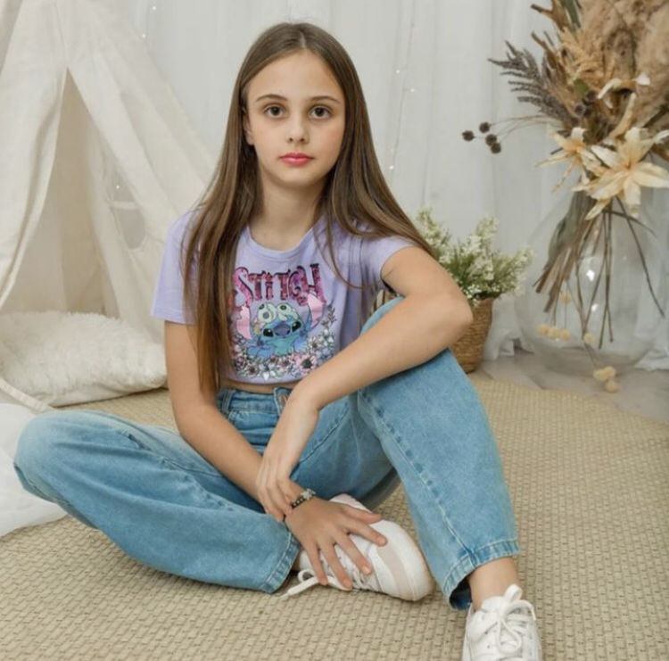
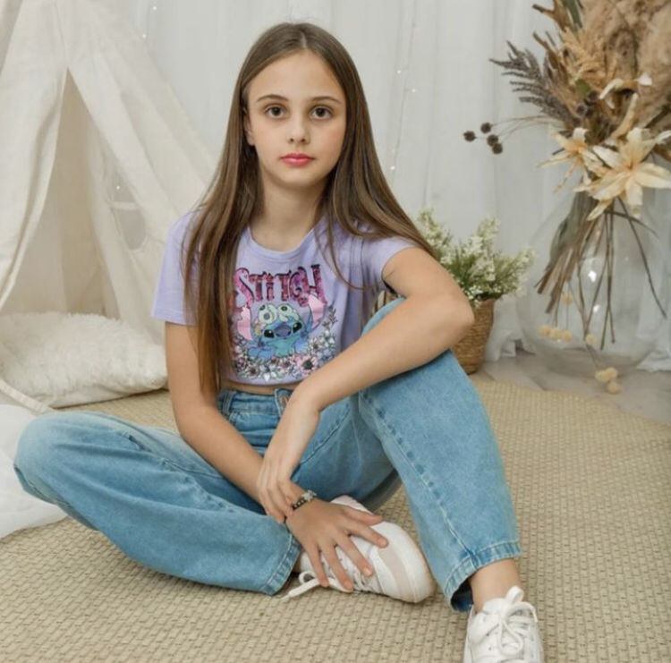

Sobre
Na Desapego Colore, acreditamos que a moda tem o poder de transformar – não apenas visualmente, mas também como uma escolha sustentável e consciente. Nosso espaço nasceu da paixão pelo consumo responsável e do desejo de dar novas histórias a peças que, de outra forma, ficariam paradas no armário. Valorizamos a criatividade e a singularidade de cada item, cuidando de cada detalhe para oferecer peças selecionadas com carinho, para que elas tenham um novo começo ao seu lado. Somos mais do que uma loja de desapegos; somos um ponto de encontro entre quem ama moda e quem quer fazer a diferença.
Missão
Nossa missão é promover o consumo consciente e acessível, incentivando um estilo de vida que valorize a sustentabilidade e o reaproveitamento. Buscamos conectar pessoas através de peças que contam histórias, inspirando uma nova forma de pensar e consumir moda.
Valores
Sustentabilidade
Acreditamos em um mundo onde cada peça tem valor e merece uma nova chance.
Respeito e Transparência
Respeito e Transparência – Prezamos pela clareza e ética em todas as etapas da coleta ao atendimento.
Qualidade e Cuidado
Selecionamos e cuidamos de cada peça para garantir que você receba produtos em excelente estado, prontos para um novo começo.
Diferencial
Nosso diferencial é o cuidado e a curaria que dedicamos a cada peça. Com um processo minucioso de seleção e higienização, garantimos que cada item da Desapego Colore esteja em perfeitas condições, pronto para trazer alegria e estilo para sua guarda-roupa. Além disso, consideramos que a experiência do cliente é fundamental, por isso oferecemos atendimento personalizado, suporte para escolher as peças ideais e um espaço acolhedor, seja em nossa loja física ou online.
Contato
Telefone: (47) 99737-8205
Email: adm@lojacolore.com.br
Endereço: Rua Antônio Coradin 157, Centro, Bituruna-PR
 
